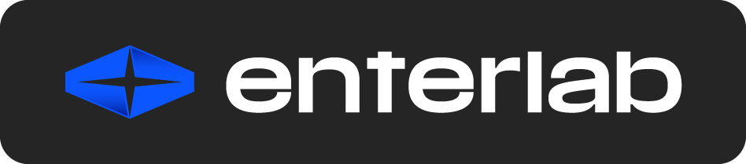
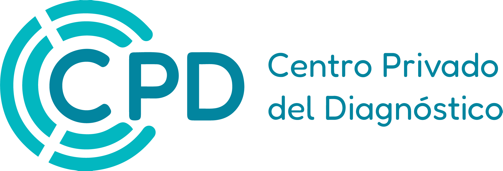
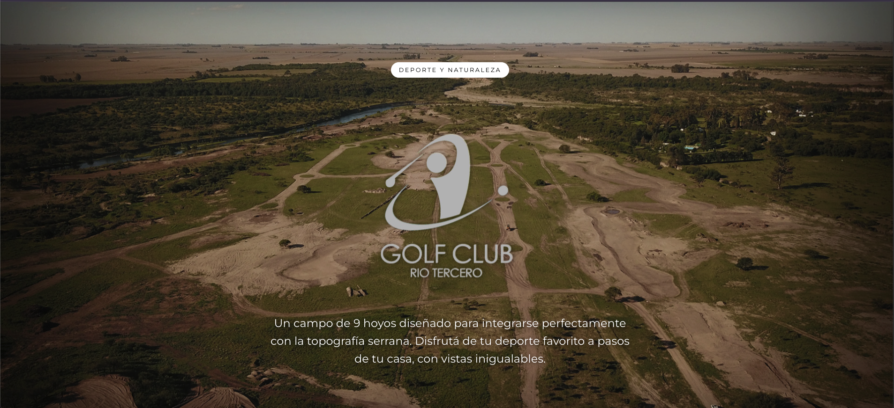
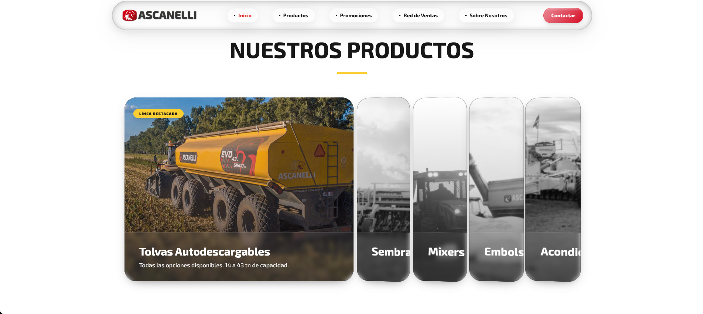
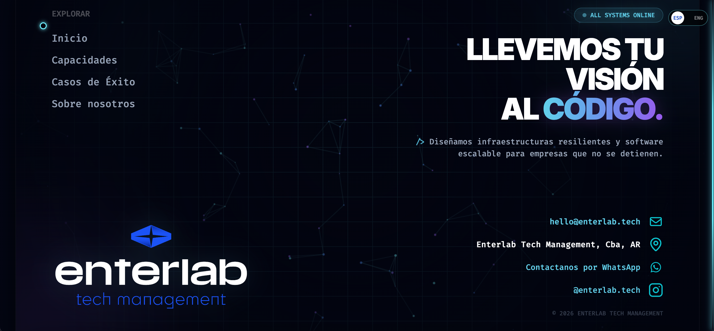

Portfolio profesional
Ivo
Ferrer
Creative Developer & Designer
Diseño web & estrategia 01
Analizo tu mercado y a tus usuarios para definir una arquitectura sólida. A partir de ahí, diseño interfaces que no solo lucen increíbles, sino que convierten y cumplen objetivos concretos de tu negocio.
Desarrollo web 02
Construyo plataformas rápidas, seguras y escalables utilizando las últimas tecnologías nativas. Mi código es limpio, optimizado para SEO y preparado para animaciones fluidas a 60fps.
Apps móviles 03
Llevo la experiencia de tu marca al bolsillo de tus usuarios. Diseño y desarrollo aplicaciones móviles nativas y multiplataforma con interfaces intuitivas y un rendimiento impecable.
Motion graphics 04
Doy vida a tu marca a través del movimiento. Creo animaciones sutiles, microinteracciones y videos inmersivos que capturan la atención y explican conceptos complejos de forma visual.
Identidad de marca 05
Creo sistemas visuales memorables y coherentes. Desde el logotipo hasta la paleta de colores y la tipografía, construyo marcas con personalidad que destacan en el competitivo entorno digital.
Compañías que han confiado en mi trabajo
- Apple
- Nike

- Ferrari
- Sony

- Adobe
- Mercedes
- Samsung
- IBM
- Airbnb
- Spotify
- Tesla
Trabajo seleccionado
¿Qué es lo
que hago?
Lo que hago son páginas web totalmente dedicadas y exclusivamente de código puro, originalidad, funciones extraordinarias, hiperenfoque en el diseño y sobre todo buscar la satisfacción del cliente mediante su confianza y un paso a paso de la creación de la página web en conjunto.
La confianza de
mis clientes
-
Ivo completó el rebranding de nuestro sitio. La calidad superó nuestras expectativas y desde entonces ganamos varios premios internacionales.
-
Trabajé varios meses junto a Ivo en un rediseño completo: copy, diseño y código. Destacó su rigor, su talento y su forma impecable de colaborar.
-
Me impresionó el enfoque de Ivo. El resultado final es exactamente lo que necesitábamos para escalar nuestro producto a un nuevo nivel.
-
Entendió nuestra marca desde la primera reunión. Cada entrega llegó a tiempo y con un nivel de detalle que pocas veces vimos en un freelancer.
-
El nuevo sitio duplicó las consultas en el primer mes. Ivo no solo diseña bonito: piensa en el negocio y en cómo convertir visitas en clientes.
-
Comunicación clara, cero vueltas y un proceso transparente de principio a fin. Ya estamos planificando el próximo proyecto juntos.
Años de experiencia
2+
Proyectos entregados
8+
Clientes satisfechos
99%
Países alcanzados
3
Cómo trabajo
-

Caso de estudio
Montecitos: de brief a producción en 6 semanas
-

Cómo trabajo
De la primera llamada al lanzamiento: mi proceso en 5 etapas
-

Precios y timelines
¿Cuánto cuesta y cuánto tarda un sitio a medida?
FAQ
¿Cómo es mi proceso típico de rediseño o renovación? +
Cada proyecto empieza por entender tu negocio, tus usuarios y tus objetivos. Antes de diseñar, analizo el sitio actual, identifico fricciones y defino oportunidades. El proceso incluye discovery, investigación UX, arquitectura, wireframes, UI, prototipos, desarrollo, QA y lanzamiento.
¿Qué servicios ofrezco exactamente? +
Ofrezco diseño y desarrollo digital de extremo a extremo: identidad, investigación UX, estrategia de producto, interfaz, motion, frontend, backend, CMS y soporte continuo. Algunos clientes llegan por una landing page; otros me confían productos complejos completos.
¿Construyes con Webflow o con código a medida? +
Ambos. Elijo la tecnología según el objetivo de tu negocio. Webflow encaja perfecto en sitios de marketing con gestión ágil; para productos complejos, animaciones avanzadas (como este portfolio) o plataformas escalables, construyo totalmente a medida.
¿Puedes ayudarme a lanzar un MVP rápido? +
Sí. Ayudo a startups y fundadores a lanzar MVPs funcionales en pocos meses, priorizando lo esencial para validar la idea en el mercado. El producto puede evolucionar después sin tener que empezar de cero.
¿Cuánto tarda un proyecto promedio contigo? +
Un sitio web inmersivo suele tomarme entre 4 y 8 semanas desde el concepto inicial hasta su paso a producción. Los productos más complejos los planifico por fases con hitos de entrega claros.